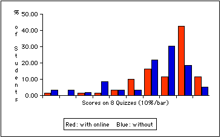

The following data compares a group of MAT 1025 students taught
with online homework (n=61) to a group taught without (n=59).
Performance on eight in-class on-paper quizzes is compared.

Additional data:
Mean (paper) quiz scores:
- With online homework: 75%
- Without online homework: 65%
Percentage of students with an estimated course grade below C:
- With online homework: 18%
- Without online homework: 39%
Return to WebCT and Precalculus page